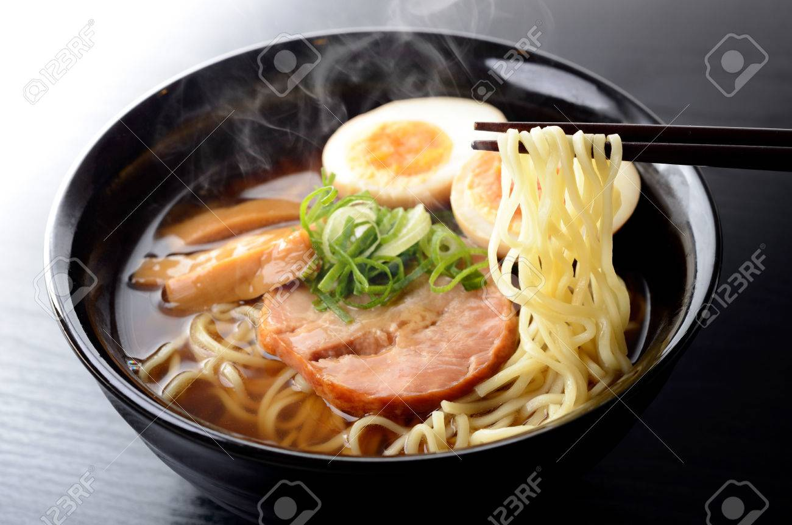

Este plato es uno mas conosido en asia es un plato japones es con sidera un de delicia
asiatia es muy saludabel .

INGREDIENTES
200 gr. de panceta de cerdo
2 huevos
Fideos soba
Aceite de oliva
vinagre
2 huesos de pollo
1 puerro
5 dientes de ajo
1 cucharadita de jengibre
1 cebolla
1 zanahoria
pasos
Lo primero que debes hacer es poner 1 litro y medio de agua a calentar en una olla, cuando empiece a
hervir añade los huesos de pollo, el ajo triturado, la cebolla cortada en cuartos, el jengibre, la
zanahoria y el puerro picado en cuatro partes. Agrega un poco de sal y deja cocinar todo junto a
fuego
bajo durante 1 hora para tener un caldo consistente y lleno de sabor.
Mientras haremos la carne, para lo cual vas a enrollar la panceta de cerdo con un poco de hilo de
cocinar y luego la sofríes bien, hasta que la carne esté dorada.
Transcurrida la hora de cocción del caldo, saca los huesos de pollo y metes la panceta que has
frito.
Deja cocinar todo junto por media hora. Pasado ese tiempo, aparta la olla del fuego, destápala y
déjala
enfriar.
En otra olla más pequeña vas a poner a fuego lento la salsa de soja, el mirin y el sake junto con
una
cucharada de jengibre, un diente de ajo picado y el puerro troceado. En el momento que veas que la
salsa
comienza a hervir, la apartas del fuego.
En otra cacerola vas a hervir medio litro de agua con el vinagre y un poco de sal, cuando alcance el
punto de ebullición echas los huevos para que se cuezan por 6 minutos
A continuación saca la carne de la olla del caldo y la pones a marinar junto con los huevos pelados
en
un recipiente con la salsa que has preparado antes. Deja marinar por 30 minutos, al terminar, deja
la
Corta los huevos ahora por la mitad y la carne la troceas a tu gusto, para que te sea más fácil
montar
el plato.
Hierves agua para cocinar los fideos soba, que no suelen tardar más de 10 minutos. Cuando estén
listos
los cuelas y escurres.
Pon los fideos en un recipiente profundo junto con caldo al gusto, agrega 5 cucharadas soperas de la
salsa que has preparado, la carne y los huevos y ya tienes tu plato de ramen listo para comer.